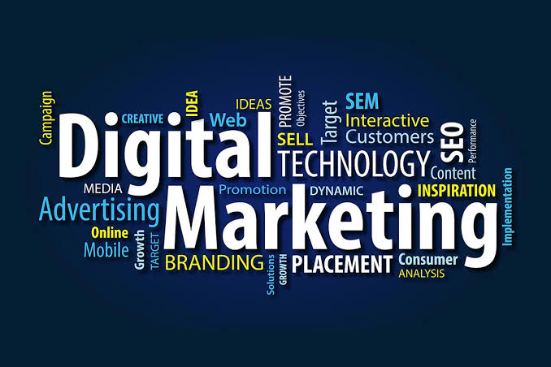

INTRODUCTION TO THE BLOG

Understanding Online Marketing
Welcome to "Understanding Online Marketing," your comprehensive guide
to navigating the dynamic world of digital marketing. In this blog, we
embark on a journey to unravel the intricacies of online marketing,
exploring the strategies, techniques, and trends that shape the
digital landscape.
In today's interconnected world and digitally driven world, online
marketing has become an indispensable tool for businesses seeking to
thrive and expand their reach. Understanding the intricate web of
strategies, channels, and techniques that make up online marketing is
essential for staying competitive and achieving your business goals.
With online marketing/business, consumers are just a click away;
online marketing has emerged as a cornerstone of success for
businesses and brands alike. Whether you're a seasoned marketer or
someone looking to harness the power of the internet for the first
time, this blog is your go-to resource for demystifying online
marketing.
Mission Statement
Our mission is simple: to empower you with the knowledge and insights
you need to thrive in the ever-evolving realm of digital marketing.
Whether you're seeking to enhance your website's visibility in search
engine results, engage with your audience on social media, create
compelling content, or leverage email marketing to nurture leads,
"Understanding Online Marketing" has got you covered.
We believe that effective online marketing is not just about tactics;
it's about understanding the underlying principles, staying updated on
the latest trends, and adapting to the shifting digital landscape.
Throughout this blog, we'll provide you with expert guidance,
actionable tips, and real-world examples to help you make informed
decisions and achieve your marketing goals.
Our content will cater to a wide range of readers, from business
owners and marketing professionals to students and aspiring digital
marketers. Whether you're looking to master the fundamentals of SEO,
unlock the secrets of successful content marketing, or decode the
intricacies of paid advertising, we'll break it down into digestible,
easy-to-understand insights.
So, if you're ready to embark on a journey of discovery and
empowerment in the realm of online marketing, fasten your seatbelts
and join us on this exciting adventure. Together, we'll unlock the
potential of digital marketing and equip you with the tools and
knowledge to thrive in the digital age.
In this comprehensive guide, we'll delve into the fundamental aspects
of online marketing to provide you with a solid foundation for
success:
Online Marketing
Online marketing, also known as digital marketing, refers to the set
of strategies and tactics employed by businesses to promote their
products or services using digital channels. These channels include:
websites, search engines, social media platforms, email, and online
advertising.
The primary objectives of online marketing are to:
- Increase brand awareness.
- Attract and engage potential customers.
- Drive website traffic.
- Generate leads and conversions.
- Build customer loyalty.
Key Components of Online Marketing
To grasp the essence of online marketing, it's important to
understand its key components:
-
Website Optimization: Your website serves as the
digital storefront for your business. Ensuring that it is
user-friendly, mobile-responsive, and optimized for search engines
is paramount. An optimized website provides a solid foundation for
your online marketing efforts.
-
Content Marketing: Content is the heart of online
marketing. It includes blog posts, articles, videos, infographics,
and more. High-quality, relevant content establishes your
authority in your industry and attracts potential customers.
-
Social Media Marketing: Engaging with your
audience on social media platforms not only helps build brand
awareness but also fosters customer loyalty. Consistent and
valuable interactions on platforms like Facebook, Instagram,
Twitter, and LinkedIn can have a significant impact.
-
Email Marketing: Email campaigns can be highly
effective for nurturing leads and converting them into loyal
customers. Personalized and targeted email communication can build
trust and drive conversions.
-
Search Engine Optimization (SEO): SEO is the
process of optimizing your website to rank higher in search engine
results pages (SERPs). It involves keyword research, on-page
optimization, link building, and technical SEO. A strong SEO
strategy improves your website's visibility and organic traffic.
-
Paid Advertising (PPC): Pay-per-click
advertising, such as Google Ads, allows you to display ads to a
specific audience based on keywords and demographics. PPC can
deliver quick results when executed effectively and is a valuable
part of online marketing.
Online Marketing Strategies
Developing a cohesive online marketing strategy is crucial for
achieving your business objectives. Here are some common strategies:
-
Content Strategy: Create a content calendar and
plan for producing high-quality content that resonates with your
target audience. Consistency is key.
-
Social Media Strategy: Identify the social media
platforms most relevant to your audience and develop a strategy
for content creation, engagement, and community building.
-
Email Marketing Strategy: Segment your email list
and create targeted email campaigns that address the specific
needs and interests of different segments.
-
SEO Strategy: Conduct keyword research and
optimize your website's content to improve its visibility in
search engine results.
-
PPC Strategy: Set clear goals for your paid
advertising campaigns, such as increasing website traffic,
generating leads, or boosting sales.Monitor and adjust campaigns
to maximize ROI.
Why Online Marketing Matters
The significance of online marketing in today's business landscape
cannot be overstated. Here's why it matters:
-
Global Reach: Online marketing allows businesses
to reach a global audience, breaking down geographical barriers.
-
Cost-Effective: Compared to traditional marketing
methods, online marketing is often more cost-effective, making it
accessible to businesses of all sizes.
-
Data-Driven Insights: Online marketing provides
valuable data and analytics that allow businesses to track the
performance of their campaigns and make data-driven decisions.
-
Adaptability: Online marketing can be quickly
adjusted and optimized based on real-time performance data,
allowing businesses to respond to market changes effectively.
In conclusion, understanding online marketing is vital for businesses
aiming to thrive in the digital age. By comprehending its key
components, strategies, and importance, you can harness the power of
online marketing to achieve your business objectives and stay ahead of
the competition. Stay tuned for more in-depth articles on specific
online marketing strategies and tactics to further enhance your
knowledge and skills in this dynamic field. Stay tuned for our
upcoming articles, each designed to shed light on a specific aspect of
online marketing, and let's embark on this enriching journey of
"Understanding Online Marketing" together!